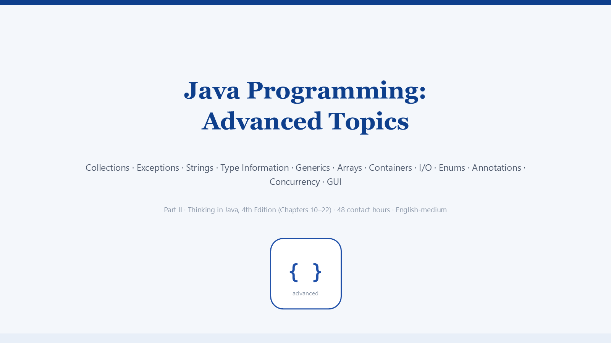

Java Advanced Topics · Thinking in Java 4e (Ch 10–22)
AUTO-PLAY: ON
1 / 139
⏮ Prev
⏸ Pause
Next ⏭
Auto
📜 Text
▦ Pages
⛶
▶
Java Advanced Topics
Narrated courseware · 139 slides · auto-plays with voice-over
Click anywhere to start · Space pause · ←/→ navigate · G page overview
✕ Close
🎉 Course complete
You have listened to all 139 slides. Review any section with ← → or the pages grid.
↻ Restart from slide 1